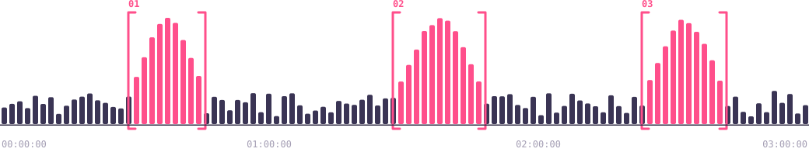

긴 방송 속
레전드만 쏙.
방송 다시보기에서 하이라이트 구간을 검출하여 세로형 클립으로 제작하는 영상 편집 도구
- 버전
- 최신 릴리즈
- 파일 크기
- 릴리즈 페이지 참조
- 지원 환경
- Windows 64비트
- 라이선스
- Apache-2.0



- 채팅 반응
- 검출 구간
- 9:16 세로형 클립
다운로드
| 배포 형태 | Windows 설치 프로그램(setup.exe) 또는 압축 파일(zip). 앱 stream2clip-gui.exe, 명령줄 도구 stream2clip.exe 포함 |
|---|---|
| 지원 환경 | Windows 64비트. Windows 11에서 검증 |
| 필수 구성 요소 | ffmpeg (영상 변환). 설치 과정에서 내려받기 |
| 설치 방식 | 설치 프로그램 실행 시 언어 선택(한국어, 일본어, 영어). 관리자 권한 불필요. zip은 압축 해제 후 실행 |
| 코드 서명 | 미적용. Windows SmartScreen 경고가 표시될 수 있으며, Smart App Control 사용 환경에서는 파이썬 패키지 설치 권장 |
| 무결성 확인 | 릴리즈 페이지의 SHA-256 값과 대조 |
| 별도 설치 기능 | 자막 받아쓰기(Whisper), YouTube 업로드는 파이썬 패키지 설치 시 제공 |
| 기타 운영체제 | macOS, Linux는 파이썬 패키지로 설치. Python 3.10 이상 필요 |
설치 절차
- 설치 프로그램 다운로드 후 실행
- 첫 화면에서 언어 선택. 선택한 언어가 앱의 표시 언어로 적용
- 추가 작업 화면에서 ffmpeg 내려받기 선택 유지 후 설치
- 시작 메뉴에서 stream2clip 실행
설치 없이 사용: zip 파일 다운로드 후 압축 해제, stream2clip-gui.exe 실행. ffmpeg는 시작 화면의 버튼으로 내려받기
파이썬 패키지 설치
pip install "stream2clip[gui,ingest,obs] @ git+https://github.com/BudongJW/stream2clip"주요 기능
- 하이라이트 검출
- 채팅량, 참여자 수, 반응 어휘, 후원 내역을 방송별 평균과 비교하여 구간 검출
- 타임라인에서 구간 이동 및 길이 조정
- 음량 분석, 노래 구간 표시 및 제외
- 방송 주소 입력
- 방송 주소만으로 채팅 수집 및 하이라이트 검출
- 선택한 구간의 영상만 다운로드
- YouTube, CHZZK, SOOP 다시보기 지원
- 세로형 클립 및 자막
- 9:16 레이아웃 5종: blur, center, fit, stack, pip
- 카라오케 자막, 자막 번역, 용어집
- 원본 제목과 주소를 포함한 설명란 자동 작성
- 화면 캡쳐 및 녹화
- F8 영역 캡쳐 및 주석 편집
- F9 화면 녹화: GIF, MP4, WebP, WebM
- 지정 색상 제거 방식의 투명 배경 녹화
- OBS 연동 및 라이브 모드
- F10 리플레이 버퍼 저장 및 클립 변환
- 라이브 모드: 방송 중 채팅 급증 시 리플레이 자동 저장 및 클립 생성
- 가이드라인 점검
- 기획사별 점검 항목 확인: hololive, にじさんじ, ぶいすぽっ!, あおぎり高校
- 점검 결과는 참고 자료이며 법적 판단이 아님
화면 구성